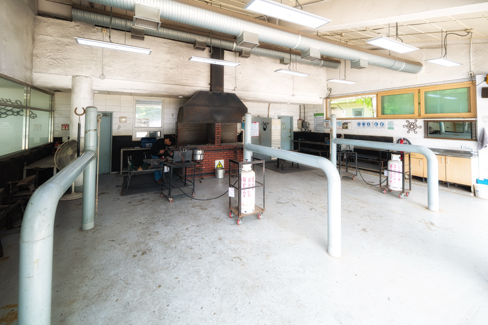
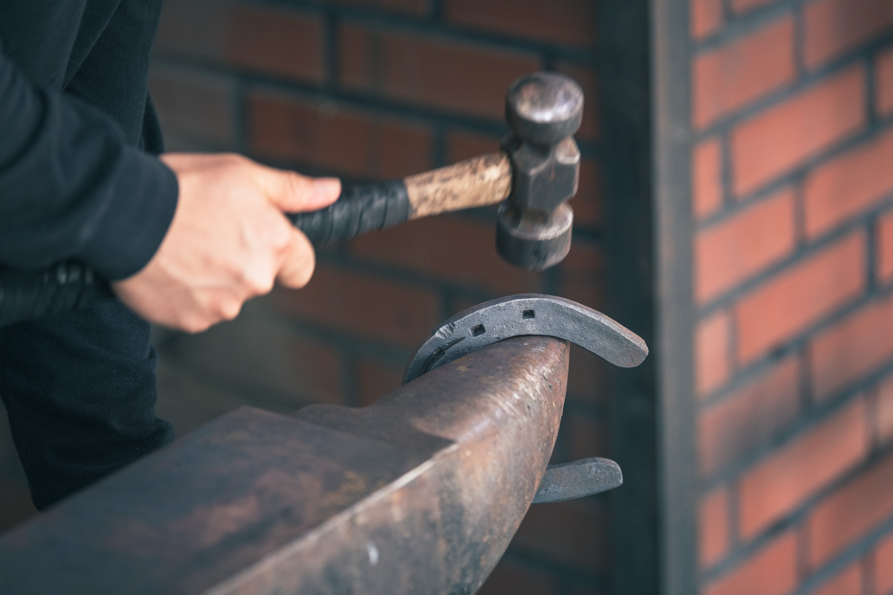

가이드 투어SEOUL · PARK TOUR
렛츠런파크 투어
말전문 동물병원과 말수영장 등 평소 공개되지 않는 경주마 훈련지역을 해설사와 함께 만납니다.
렛츠런파크 투어 예약하기회차별 20명 정원으로 운영합니다.COURSE
경주마의 하루를 따라 걷는 80분
해설사의 이야기와 함께 서울 렛츠런파크의 숨은 공간을 둘러봅니다.
- 01START
해피빌 투어데스크
예약 확인 및 안전 안내
- 02HORSE CARE
말전문 동물병원
경주마의 건강을 책임지는 전문 시설
- 03TRAINING
말수영장·훈련지역
경주마의 특별한 운동과 회복 과정
- 04FINISH
관람대 전망대
경주로 전경과 함께 투어 마무리
GALLERY
투어 미리보기

- 야외 도보 이동이 포함되므로 편한 신발을 착용해주세요.
- 투어 시작 10분 전까지 집결장소에 도착해주세요.
- 포니 승마체험과 시간이 겹치는 경우 중복 예약할 수 없습니다.
- 기상 및 운영 상황에 따라 코스가 변경될 수 있습니다.
1인8,000원
예약하기